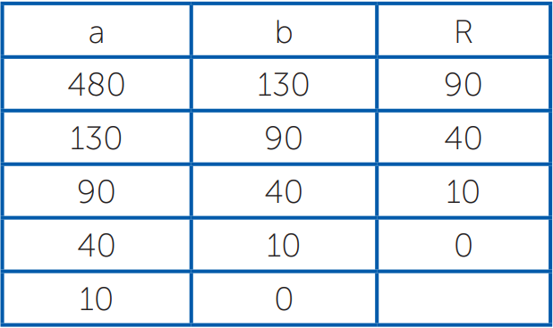

Olá! A partir de agora você vai desmistificar como funciona os algoritmos e quais as suas aplicações dentro da programação, você conhecerá conceitos, aplicações e os tipos de algoritmos. Para tal, vamos resgatar alguns autores que descreveram as definições sobre algoritmos: segundo Szwarcfiter e Markenzon (1994), algoritmos são definidos como sendo o processo sistemático para a resolução de um problema. Segundo Manzano (2015), um algoritmo é um conjunto lógico de operações predefinidas que resolva um determinado problema de forma intuitiva. Saliba (1993), Berg e Figueiró (1998) descrevem algoritmos como sendo uma sequência ordenada de passos que deve ser seguida para a realização de uma tarefa. Enfim, os algoritmos nortearão você a descobrir qual o melhor percurso para solucionar um problema computacional. Partindo das definições citadas, veja a rotina para realização de um algoritmo para efetuar o cozimento de um arroz:
Podemos, ainda, criar um algoritmo um pouco mais detalhado para preparar o cozimento do arroz:
Perceba que não existe somente uma forma de realizar um algoritmo, você pode criar outras formas e sequências para obter o mesmo resultado, ou seja, eles são independentes, porém, com a mesma finalidade de execução.
Pois bem, você pode representar os algoritmos em três partes: Entrada, Processamento e Saída. Por exemplo:
• Entrada: ingredientes para o preparo do arroz.Segundo Piva (2012), vale a pena citar o algoritmo Euclidiano, Euclides, usando de sua sabedoria, criou um algoritmo para calcular o máximo divisor comum, o famoso “mdc” no qual pode ser resumida da seguinte forma:
1. Dividir um número “a” por “b”, onde o resto é representado por “r”. 2. Substituir a por b. 3. Substituir b por r. 4. Continuar a divisão de a por b até que um não possa ser mais dividido, então “a” é considerado o mdc.Veja na Tabela 1.1 a solução do “mdc” do algoritmo acima:
Nesse caso, o resultado fica: mdc (480,130) = 10 Perceba que a linguagem natural é muito próxima da nossa linguagem. Antes de iniciar a explicação sobre diagrama de blocos e pseudocódigo, vamos entender sucintamente o que são variáveis e atribuições. Vamos lá? As variáveis, como o próprio nome sugere, é algo que pode sofrer variações, ou seja, estão relacionadas a identificação de uma informação e atribuição (←), que tem a função de indicar valores para as variáveis, ou seja, atribuir informação para variável. Por exemplo:
valor1 ←12
nome ←marcio
Significa que a o número “12” está sendo atribuído para variável “valor1” e que o texto “marcio” está atribuído para variável “nome”.